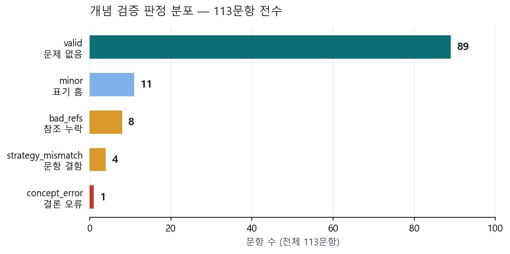

FHTC — 시선으로 오답 원인을 진단하는 시스템
math_gaze초등학생이 수학 문제를 풀 때 시선이 어디로 향하는지로 오답 패턴을 탐지하고 피드백하는 시스템. 제가 Phase 1~4 전 구간을 담당했습니다
- 학생이 왜 틀렸는지를 답이 아니라 시선으로 진단하는 졸업 프로젝트입니다.
- 시선 데이터만으로 오답 원인을 5가지 패턴으로 분류하는 탐지 로직과 시계열 로그 스키마를 설계했습니다.
- 이어서 데이터 층을 맡아 출제 가능 문항을 0개에서 109개로 열고, 조용히 실패하던 결함들을 잡아 재발 방지 검사를 남겼습니다.


문제 🤔
1차 발표 이후 세 가지 한계가 남아 있었습니다. ① 시선 추적 장비가 없어 마우스로 대체하고 있었고, ② 오답 원인을 판별할 데이터 기준 자체가 없었으며(특정 영역을 봤다는 건 알아도 관계어를 놓친 건지 찍은 건지 구분 불가), ③ 답안 판단이 '응시 시간이 가장 긴 보기'라는 단순 방식이었습니다. 제가 맡은 Phase 1~4는 이 세 가지를 푸는 구간이었습니다.
접근 🛠
- Phase 1 — 아키텍처 분리. 마우스 처리 로직과 시선 분석 로직이 한 파일에 섞여 있던 것을
useGazeTracker훅으로 분리해 좌표 수집 레이어와 분석 레이어를 독립시켰습니다. - Phase 2 — 5대 오답 패턴 탐지. 시선 데이터만으로 오답 원인을 문제 미독 · 관계어 누락 · 표상 연결 실패 · 인지적 정체 · 찍기 다섯 가지로 분류하는 규칙을 설계했습니다.
- Phase 3 — 시계열 로그 스키마.
focusLogs배열에 type · region · fromRegion · keyword · startMs · isBacktracking을 기록하고, 백엔드 전송 구조를 미리 만들었습니다. - Phase 4 — 결과 리포트. 패턴별 탐지 결과를
PatternReport로 표시하되 true / false / null 3상태로 두어, 판정할 수 없는 것을 판정한 척하지 않게 했습니다. - 이후 — 데이터 검증. 출제 가능 문항이 0개였던 데이터 층을 열고, 결함이 필터를 뚫고 들어온 세 경로를 각각 막았습니다.
결과 📈
시선 데이터만으로 오답 원인을 5가지로 분류하는 탐지 로직과 시계열 로그 스키마를 완성했고, 결과 리포트까지 연결했습니다. 이어서 맡은 데이터 층에서는 출제 가능 문항을 0 → 109로 열고, 출제 편중을 14배 → 1.8배로 낮췄으며(커버리지 100%), 1,212건 중 깨진 AOI 참조 3건을 0으로 만들었습니다.
막혔던 지점과 그때의 판단 🚩
에러가 안 나는 고장이 제일 오래 산다
데이터 층을 열 때 찾은 문제들의 공통점은 전부 조용했다는 것입니다. 확장이 보낸 시선 좌표의 90%를 버리고 있었는데 좌표는 계속 들어오고 로그도 계속 쌓였습니다. 독립 모델 교차 대조 12건이 전부 실패했는데도 exit 0과 빈 결과 파일 때문에 성공으로 기록됐습니다. 마지막에 문제가 있으면 종료 코드 1을 내는 검사 스크립트를 만들고, 일부러 데이터를 깨뜨려 실제로 걸리는 것까지 확인했습니다.
출제 편중을 두 번 실패하고 세 번째에 맞췄다
특정 문항이 다른 문항보다 14배 자주 나왔습니다. 1차로 비율대로 배분하니 편중은 3.2배로 줄었지만 7문항이 아예 안 나왔습니다. 2차로 학년 균형을 포기하니 2.5배가 됐지만 얇은 유형이 과대표집됐습니다. 3차에서 유형 배정을 풀 비율대로 바꾸자 1.8배 · 커버리지 100%가 나왔습니다.
더 자세히
관심 있는 항목만 펼쳐 보세요.
이 프로젝트가 시작된 배경
학생이 문제를 틀렸을 때, 답안지만 봐서는 왜 틀렸는지 알 수 없습니다. 문제를 안 읽은 것인지, '이상'·'남은' 같은 관계어를 놓친 것인지, 그림과 보기를 연결하지 못한 것인지, 아니면 그냥 찍은 것인지 — 원인이 다르면 필요한 피드백도 다릅니다. FHTC는 시선이 어디에 얼마나 머물렀는지로 그 원인을 구분하려는 졸업 프로젝트입니다.
설계 결정과 근거 7
좌표 처리 전체를 함수 하나에 모았다
processGazePoint 하나에 AOI 판별과 로그 업데이트를 모아뒀습니다. 지금은 마우스 이벤트로 호출하지만, 나중에 WebGazer나 MediaPipe 같은 실제 시선 SDK로 교체할 때 이 함수 하나만 바꾸면 나머지 로직은 손댈 필요가 없습니다. useCallback으로 감싸 클로저도 안정적으로 유지했습니다.
아직 없는 '수식칸' 영역을 미리 정의했다
현재 문제 데이터에는 수식이 없지만, 추후 수식 포함 문항을 넣을 때를 대비해 AOI에 수식칸을 미리 넣었습니다. 표상 연결 실패 탐지 조건에도 수식칸 분기 코드가 이미 들어가 있습니다. 나중에 데이터만 추가하면 됩니다.
판정할 수 없는 패턴은 null로 남겨뒀다
관계어 누락은 RELATION_KEYWORDS 목록으로 1차 태깅하는데, 같은 단어라도 문제 맥락에 따라 중요할 수도 아닐 수도 있습니다. 그래서 이 패턴의 detected를 임의로 true/false로 정하지 않고 null(LLM 분석 필요)로 두었습니다. 리포트에도 그대로 '분석 필요'로 표시됩니다.
역행 시선을 패턴에서 빼고 다른 용도로 돌렸다
역행(다시 돌아가 보는 것)은 오답 신호가 아닙니다. 문제 텍스트 역행은 꼼꼼히 다시 읽은 긍정 신호고, 보기 역행은 답을 고민한 행동입니다. 그래서 5대 패턴에서 빼고 '고민한 답안' 산출에 활용했습니다.
고민한 답안을 응시 시간만으로 정하지 않았다
가장 오래 본 보기가 가장 고민한 보기는 아닙니다. 오갔다 돌아온 행동이 더 강한 신호라고 보고 가중치 공식을 만들었습니다 — 점수 = 응시시간(ms) + 교차횟수 × 500 + 역행횟수 × 300. 상위 2개를 반환합니다. 가중치는 휴리스틱이며 실제 데이터가 쌓이면 재추정할 예정입니다.
시간을 절대시간이 아니라 세션 상대시간으로 저장했다
내부 계산은 절대시간으로 하고 저장할 때만 상대시간으로 변환합니다. 그래야 문제 간 비교가 가능하고 백엔드 타임라인 분석에서도 의미가 있습니다.
역행 추적 단위를 region이 아니라 focusId로 잡았다
region 단위로 하면 같은 영역 안에서 눈이 조금만 움직여도 역행으로 잡혀 노이즈가 너무 많습니다. 개별 focusId 단위로만 추적했습니다.
데이터
problem.json의 gazeConfig로 문제별 조정 가능화면 · 시각화 더 보기 1

막혔던 지점 더 보기 1
모범 사고로 보여선 안 될 추론이 섞여 있었다
학생에게 보여줄 풀이 원문을 검토하다 보기 의존 검산 3건을 발견했습니다. 계산이 맞았는데도 "이 값이 보기에 없네, 내가 틀렸나 봐"라며 되돌아가는 사고 과정입니다. 이걸 그대로 진단에 넣으면 우리가 탐지하려는 찍기·보기 의존을 모범 답안으로 제시하게 됩니다. 한자 혼입 6건과 함께 제외했습니다.
이 결과가 틀렸을 수 있는 지점
- 입력이 아직 마우스 이벤트입니다. WebGazer 또는 MediaPipe SDK로 교체할 예정이고, 교체 지점은 함수 하나로 좁혀 뒀습니다.
- 관계어 판정이 프론트 키워드 목록 1차 매칭이라 문맥을 못 봅니다. LLM이 문제별 핵심 관계어를 추출하는 방식으로 개선할 계획입니다.
- 패턴 최종 판정이 프론트 휴리스틱입니다. 향후 LLM이 판정하고 별도 LLM이 그 판정을 검증하는 LLM as a Judge 파이프라인을 도입할 예정입니다.
- 사고 경로 대조 시각화(Canvas/SVG)는 미구현입니다. focusLogs 데이터는 이미 충분해서 시각화 레이어만 추가하면 되는 상태이며, 미구현 사항임을 발표에서 명시했습니다.
fixationThresholdMs: 300같은 임계값에 근거가 없습니다. 학생 데이터가 쌓여야 정할 수 있습니다.- 시선이 낱말에 정확히 떨어지는지는 사람이 앉아서 재봐야 확인됩니다. 안 되면 진단 단위를 줄 단위로 내려야 합니다.
회고
두 가지를 배웠습니다. 하나는 판정할 수 없는 것을 판정한 척하지 않는 것입니다. 관계어 누락을 null로 남겨두고 리포트에 '분석 필요'로 표시한 것, 미구현 시각화를 발표에서 먼저 밝힌 것이 같은 원칙이었습니다. 다른 하나는 검증 도구가 조용히 실패하는 것은 검증하지 않는 것보다 나쁘다는 것입니다. 빈 결과 파일은 "검사했더니 문제 없음"과 구분되지 않기 때문입니다.